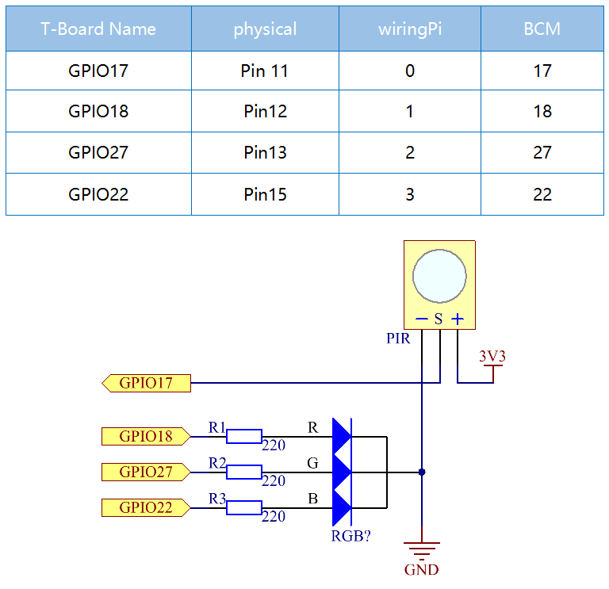
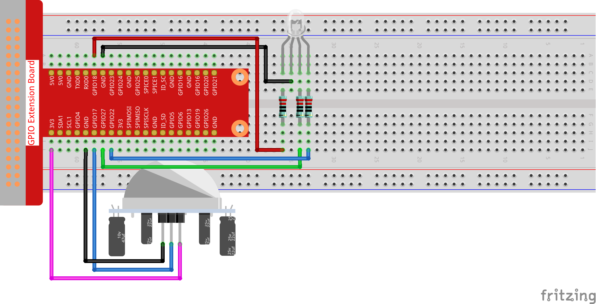

2.2.4 PIR¶
Einführung¶
In diesem Projekt werden wir ein Gerät unter Verwendung der pyroelektrischen Infrarotsensoren des menschlichen Körpers herstellen. Wenn sich jemand der LED nähert, leuchtet die LED automatisch auf. Wenn nicht, geht das Licht aus. Dieser Infrarot-Bewegungssensor ist ein Typ Sensor, der das von Mensch und Tier emittierte Infrarot erfassen kann.
Komponenten¶

Prinzip¶
Der PIR-Sensor erfasst Infrarot-Wärmestrahlung, mit der das Vorhandensein von Organismen erfasst werden kann, die Infrarot-Wärmestrahlung emittieren.
Der PIR-Sensor ist in zwei Steckplätze unterteilt, die an einen Differenzverstärker angeschlossen sind. Wenn sich ein stationäres Objekt vor dem Sensor befindet, empfangen die beiden Schlitze die gleiche Strahlungsmenge und der Ausgang ist Null. Wenn sich ein sich bewegendes Objekt vor dem Sensor befindet, empfängt einer der Schlitze mehr Strahlung als der andere, wodurch der Ausgang stark oder niedrig schwankt. Diese Änderung der Ausgangsspannung ist ein Ergebnis der Bewegungserkennung.

Nach dem Verdrahten des Sensormoduls erfolgt eine einminütige Initialisierung. Während der Initialisierung wird das Modul in Intervallen 0 bis 3 Mal ausgegeben. Dann befindet sich das Modul im Standby-Modus. Bitte halten Sie die Interferenz von Lichtquellen und anderen Quellen von der Oberfläche des Moduls fern, um Fehlfunktionen durch das Störsignal zu vermeiden. Und Sie sollten das Modul besser ohne zu viel Wind verwenden, da der Wind auch den Sensor stören kann.

Abstandseinstellung¶
Durch Drehen des Knopfes des Potentiometers zur Entfernungseinstellung im Uhrzeigersinn vergrößert sich der Bereich der Erfassungsentfernung und der maximale Erfassungsentfernungsbereich beträgt etwa 0 bis 7 Meter. Wenn Sie ihn gegen den Uhrzeigersinn drehen, verringert sich die Reichweite der Erfassungsentfernung, und die minimale Reichweite der Erfassungsentfernung beträgt etwa 0 bis 3 Meter.
Verzögerungseinstellung¶
Drehen Sie die Taste des Potentiometers für die Verzögerungseinstellung im Uhrzeigersinn. Sie können auch sehen, wie die Erfassungsverzögerung zunimmt. Das Maximum der Erfassungsverzögerung kann bis zu 300 s erreichen. Im Gegenteil, wenn Sie es gegen den Uhrzeigersinn drehen, können Sie die Verzögerung um mindestens 5 Sekunden verkürzen.
Zwei Triggermodus: (Auswahl verschiedener Modus mit der Überbrückungskappe).
H: Wiederholbarer Triggermodus, nachdem der menschliche Körper erfasst wurde, gibt das Modul einen hohen Niveau aus. Wenn während der nachfolgenden Verzögerungszeit jemand den Erfassungsbereich betritt, bleibt der Ausgang auf dem hohen Niveau.
L：Nicht wiederholbarer Triggermodus, der einen hohen Niveau ausgibt, wenn er den menschlichen Körper erfasst. Nach der Verzögerung wechselt der Ausgang automatisch von einem hohen zu einem niedrigen Niveau.
Schematische Darstellung¶
Experimentelle Verfahren¶
Schritt 1: Bauen Sie die Schaltung auf.
Für Benutzer in C-Sprache¶
Schritt 2: Gehen Sie zum Ordner der Kode.
cd /home/pi/davinci-kit-for-raspberry-pi/c/2.2.4/
Schritt 3: Kompilieren Sie die Kode.
gcc 2.2.4_PIR.c -lwiringPi
Schritt 4: Führen Sie die ausführbare Datei aus.
sudo ./a.out
Nachdem die Kode ausgeführt wurde, erkennt PIR die Umgebung und lässt die RGB-LED gelb leuchten, wenn sie erkennt, dass jemand vorbeigeht. Das PIR-Modul verfügt über zwei Potentiometer: Das eine dient zum Einstellen der Empfindlichkeit und das andere zum Einstellen des Erfassungsabstands. Damit das PIR-Modul besser funktioniert, müssen Sie versuchen, diese beiden Potentiometer einzustellen.
Kode
#include <wiringPi.h>
#include <softPwm.h>
#include <stdio.h>
#define uchar unsigned char
#define pirPin 0 //the pir connect to GPIO0
#define redPin 1
#define greenPin 2
#define bluePin 3
void ledInit(void){
softPwmCreate(redPin, 0, 100);
softPwmCreate(greenPin,0, 100);
softPwmCreate(bluePin, 0, 100);
}
void ledColorSet(uchar r_val, uchar g_val, uchar b_val){
softPwmWrite(redPin, r_val);
softPwmWrite(greenPin, g_val);
softPwmWrite(bluePin, b_val);
}
int main(void)
{
int pir_val;
if(wiringPiSetup() == -1){ //when initialize wiring failed,print message to screen
printf("setup wiringPi failed !");
return 1;
}
ledInit();
pinMode(pirPin, INPUT);
while(1){
pir_val = digitalRead(pirPin);
if(pir_val== 1){ //if read pir is HIGH level
ledColorSet(0xff,0xff,0x00);
}
else {
ledColorSet(0x00,0x00,0xff);
}
}
return 0;
}
Kode Erklärung
void ledInit(void);
void ledColorSet(uchar r_val, uchar g_val, uchar b_val);
Mit dieser Kode wird die Farbe der RGB-LED eingestellt. Weitere Informationen finden Sie unter 1.1.2-RGB LED.
int main(void)
{
int pir_val;
//……
pinMode(pirPin, INPUT);
while(1){
pir_val = digitalRead(pirPin);
if(pir_val== 1){ //if read pir is HIGH level
ledColorSet(0xff,0xff,0x00);
}
else {
ledColorSet(0x00,0x00,0xff);
}
}
return 0;
}
Wenn PIR das menschliche Infrarotspektrum erkennt, sendet die RGB-LED das gelbe Licht aus. Wenn nicht, wird das blaue Licht ausgesendet.
Für Python-Sprachbenutzer¶
Schritt 2: Gehen Sie zum Ordner der Kode.
cd /home/pi/davinci-kit-for-raspberry-pi/python/
Schritt 3: Führen Sie die ausführbare Datei aus.
sudo python3 2.2.4_PIR.py
Nachdem die Kode ausgeführt wurde, erkennt PIR die Umgebung und lässt die RGB-LED gelb leuchten, wenn sie erkennt, dass jemand vorbeigeht. Das PIR-Modul verfügt über zwei Potentiometer: Das eine dient zum Einstellen der Empfindlichkeit und das andere zum Einstellen des Erfassungsabstands. Damit das PIR-Modul besser funktioniert, müssen Sie versuchen, diese beiden Potentiometer einzustellen.
Kode
import RPi.GPIO as GPIO
import time
rgbPins = {'Red':18, 'Green':27, 'Blue':22}
pirPin = 17 # the pir connect to pin17
def setup():
global p_R, p_G, p_B
GPIO.setmode(GPIO.BCM) # Set the GPIO modes to BCM Numbering
GPIO.setup(pirPin, GPIO.IN) # Set pirPin to input
# Set all LedPin's mode to output and initial level to High(3.3v)
for i in rgbPins:
GPIO.setup(rgbPins[i], GPIO.OUT, initial=GPIO.HIGH)
# Set all led as pwm channel and frequece to 2KHz
p_R = GPIO.PWM(rgbPins['Red'], 2000)
p_G = GPIO.PWM(rgbPins['Green'], 2000)
p_B = GPIO.PWM(rgbPins['Blue'], 2000)
# Set all begin with value 0
p_R.start(0)
p_G.start(0)
p_B.start(0)
# Define a MAP function for mapping values. Like from 0~255 to 0~100
def MAP(x, in_min, in_max, out_min, out_max):
return (x - in_min) * (out_max - out_min) / (in_max - in_min) + out_min
# Define a function to set up colors
def setColor(color):
# configures the three LEDs' luminance with the inputted color value .
# Devide colors from 'color' veriable
R_val = (color & 0xFF0000) >> 16
G_val = (color & 0x00FF00) >> 8
B_val = (color & 0x0000FF) >> 0
# Map color value from 0~255 to 0~100
R_val = MAP(R_val, 0, 255, 0, 100)
G_val = MAP(G_val, 0, 255, 0, 100)
B_val = MAP(B_val, 0, 255, 0, 100)
#Assign the mapped duty cycle value to the corresponding PWM channel to change the luminance.
p_R.ChangeDutyCycle(R_val)
p_G.ChangeDutyCycle(G_val)
p_B.ChangeDutyCycle(B_val)
#print ("color_msg: R_val = %s, G_val = %s, B_val = %s"%(R_val, G_val, B_val))
def loop():
while True:
pir_val = GPIO.input(pirPin)
if pir_val==GPIO.HIGH:
setColor(0xFFFF00)
else :
setColor(0x0000FF)
def destroy():
p_R.stop()
p_G.stop()
p_B.stop()
GPIO.cleanup() # Release resource
if __name__ == '__main__': # Program start from here
setup()
try:
loop()
except KeyboardInterrupt: # When 'Ctrl+C' is pressed, the child program destroy() will be executed.
destroy()
Kode Erklärung
rgbPins = {'Red':18, 'Green':27, 'Blue':22}
def setup():
global p_R, p_G, p_B
GPIO.setmode(GPIO.BCM)
# ……
for i in rgbPins:
GPIO.setup(rgbPins[i], GPIO.OUT, initial=GPIO.HIGH)
p_R = GPIO.PWM(rgbPins['Red'], 2000)
p_G = GPIO.PWM(rgbPins['Green'], 2000)
p_B = GPIO.PWM(rgbPins['Blue'], 2000)
p_R.start(0)
p_G.start(0)
p_B.start(0)
def MAP(x, in_min, in_max, out_min, out_max):
return (x - in_min) * (out_max - out_min) / (in_max - in_min) + out_min
def setColor(color):
...
Mit dieser Kode wird die Farbe der RGB-LED eingestellt. Weitere Informationen finden Sie unter 1.1.2-RGB LED.
def loop():
while True:
pir_val = GPIO.input(pirPin)
if pir_val==GPIO.HIGH:
setColor(0xFFFF00)
else :
setColor(0x0000FF)
Wenn PIR das menschliche Infrarotspektrum erkennt, sendet die RGB-LED das gelbe Licht aus. Wenn nicht, wird das blaue Licht ausgesendet.
Phänomen Bild¶